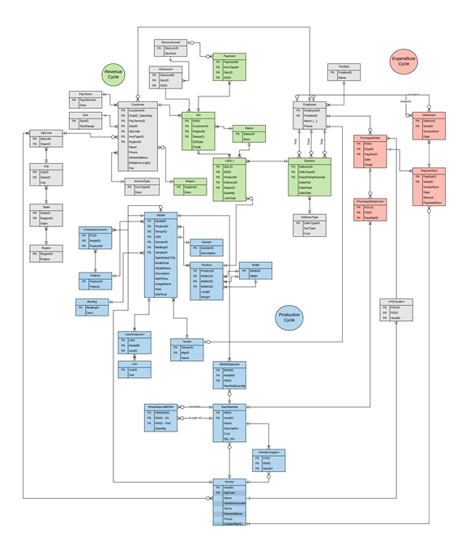
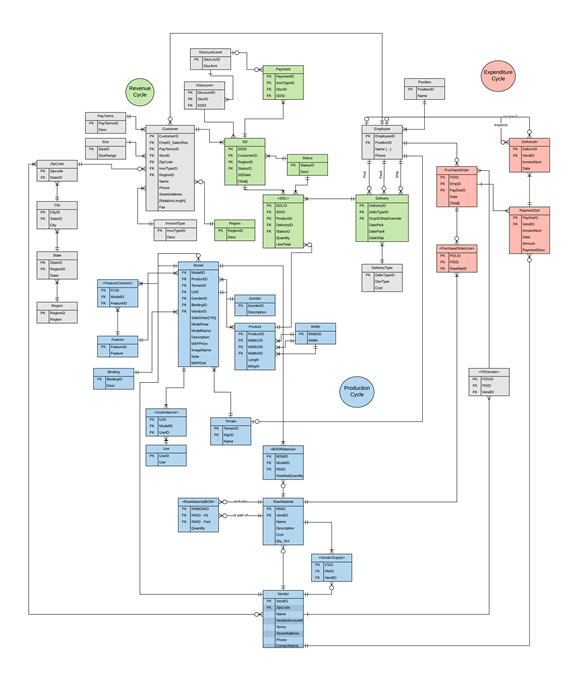

-
 

-

MIS Database Project
Objective:
-
Communicate with a client to design a database suited to their organization's needs.
-
Include methods for performing data analysis and performance reports.
Process:
-
Design an entity relationship diagram to visualize the database structure.
-
Apply the principles of normalization to the ERD, thereby reducing data redundancy and establishing relationships between tables.
-
Using Microsoft SQL Server, create a relational database in accordance to the ERD.
-
Produce SQL queries to perform data analysis and output a report with the results.
-
Write a project report, detailing the resources, time, and procedures required to create the database.